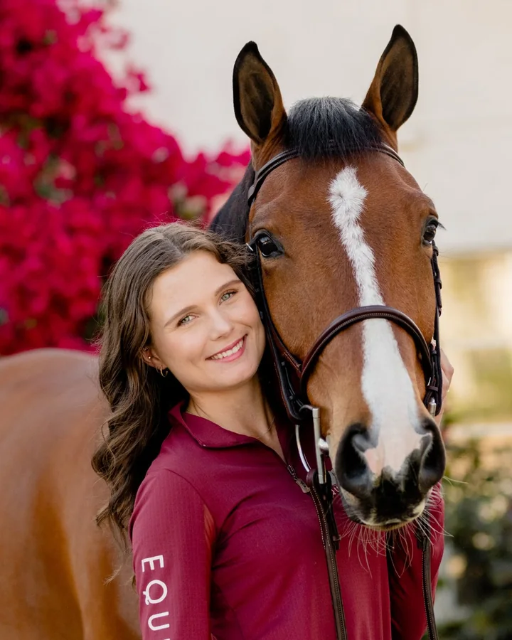

Hello, I'm
A full stack developer with a designer's eye. I've spent four years building everything from C# and SQL Server systems at enterprise scale to custom WordPress, WooCommerce and LearnDash sites for more than a hundred clients.

Agency builds from Unravel and LA Fitness, and independent projects for the equestrian world I grew up in.
Before I wrote code, I was a horse trainer, running barns, coaching riders and keeping a hundred small details in order. It turned out to be good practice for software.
I learned C# and ASP.NET in my first two weeks at LA Fitness and worked independently on the team from then on. Today I'm the person clients call first: I turn their requests into clear specs, then design, build and ship them.
Cal Poly San Luis Obispo, B.S. Agribusiness, minor in Equine Science
UC San Diego Extended Studies, Full Stack Web Development Certificate
WordPress and WooCommerce builds and custom applications for clients in healthcare, real estate, ecommerce and manufacturing, plus API integrations, dashboards, member flows and conversion tracking.
Full stack C#, ASP.NET and JavaScript for four brand sites, internal tools and in app pages, with Entity Framework Core and SQL Server tuning.
Social campaigns, newsletters, weekly blog writing and site design.
Tools I reach for
JavaScriptPHPC#SQLReactNode.jsASP.NETEntity Framework CoreWooCommerceLearnDashBricksACF ProMySQLSQL ServerREST APIsZapier
I'm open to full stack and front end roles, and always happy to talk about a project.
vossellerm@gmail.com